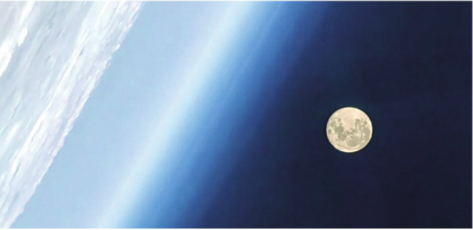

教材文本 · 实用类文本阅读
月亮是从哪里来的
文章比较月球起源的四种假说，说明科学家怎样根据观测线索提出解释、考察疑难，并在持续研究中深化认识。
导读
文体与题材：科普说明文，围绕月球起源介绍科学假说及其解释依据。
作者简介：卞毓麟，天文学家、科普作家，长期从事天文科普写作。
文本出处：本文选自《千古天问：天文篇》（中国少年儿童出版社2002年版）。收入教材时，作者作了改动。
内容脉络：文章先从地月距离、大小和运动等特征引出月球起源之问，依次介绍分裂、俘获、同源和大碰撞四种假说。各部分围绕形成过程、所依据的现象及遇到的疑难展开，并在前后比较中显示解释逐步深化的过程，最后指出探索仍须持续。
内容主旨：科学解释需要观测线索，也需要接受其他事实与条件的检验。文章通过月球起源研究呈现求知、质疑和不断探索的精神。
阅读重点：区分观测事实与假说内容，辨认“然而”“所以”等词连接的推理关系；比较四种形成机制，体会数字、形象化词语与限定语各自承担的说明任务。
课文
原文按结构分节；随文内容可定位至对应段落。
对象特征：由地月距离、大小与运动关系介绍月球。
茫茫太空中，月亮是离地球最近的星球。它是一个球体，所以又叫月球。古人总是梦想到月球上去旅行，可是他们却不知道月球有多远。后来，天文学家们想出许多巧妙的主意，越来越精确地测量了地球到月球的距离。现在我们知道：月球沿着椭圆形的轨道绕地球转动，它们之间的平均距离是384400千米，近似等于地球赤道周长的10倍。
注释 · 批注 5
教材原注 · 篇目出处
茫茫太空中选自《千古天问：天文篇》（中国少年儿童出版社2002年版）。收入教材时，作者作了改动。
教材旁批 · 1
离地球最近的星球点出月亮和地球的特殊关系。
释读：首句将说明对象放在地月关系中，距离又与地球赤道周长相比较，使读者从熟悉的地球尺度理解月球。
教材旁批 · 2
月球的直径是3476千米详细列举数据，有什么作用？
释读：直径、面积和体积的比例使大小差异可比较；自转与公转所用时间相同，又为解释朝向地球的面基本不变提供依据。数据各自承担比较或解释任务。
科学释读 · 月球外逸层与水
月球上没有空气，没有液态水月球周围有极稀薄的外逸层，无法供人呼吸；月面缺乏可稳定存在的地表液态水。探测已发现极区水冰和月表水分子，因此“没有液态水”须与“没有任何形态的水”区分。迄今探测未发现月球自身生命的证据，原文“死寂”可联系其环境条件理解。参见NASA：Moon Facts。
科学释读 · 同步自转与可见月面
它自转一周所花的时间正好也是27.3天月球自转周期与绕地球公转周期相同，约为27.3天，称同步自转；月相重复一周约需29.5天，所用参照不同。长期观察还会发现月面有轻微的视位置摆动，称天平动，因而可先后看到约59%的月面。参见NASA：月球运动与NASA SVS：Moon Wobble。
提出问题：由起源之问引出依据不同线索提出的四种假说。
也许你已经想过一个有趣的问题：“月亮生在何时？来自何方？”这个问题在天文学中称为“月球的起源”。虽然它的答案至今尚未揭晓，天文学家们却掌握了许多有关的线索。根据这些线索，100多年来他们提出了好几种有关月球起源的学说：“分裂说”，“俘获说”，“同源说”，以及20世纪七八十年代中提出的第四种观点——“大碰撞说”。
第一种解释：分裂说以地球自转说明月球形成，又遇到轨道与动力条件的困难。
“分裂说”是在19世纪末，由英国天文学家乔治·达尔文首先提出的。他认为太阳系刚形成的时候，地球和月球原是一个天体。当时地球的温度非常高，还没有凝结成固体；它自转很快，天长日久，就从赤道部分甩出了一大块物质，后来形成了月球。“分裂说”解释了月球的密度和化学组成为什么和地球的表层相似，那是因为它们本来就是连成一块的同样一些物质。“分裂说”也解释了由花岗岩构成的大陆为什么不是连续地覆盖着地球的表面，那是因为有一大块陆地“飞”了出去——太平洋就是月球分裂出去后在地球上留下的“疤痕”。但是，如果月球真是从地球的赤道地区甩出去的，那么它绕地球公转的轨道平面就应该和地球的赤道平面几乎重合，但实际上这两个平面相交的角度却超过了5°。这种戏剧性的理论遇到的疑难很多，所以如今它的拥护者已经寥寥无几。
批注 2
教材旁批 · 3
“分裂说”是在19世纪末介绍“分裂说”，层次分明：先解说基本内容，再阐明合理之处，最后分析主要疑难。
释读：先交代由地球分出的设想，再说明这一设想试图解释的现象，随后用轨道平面关系提出困难。阅读时须区分假说的内容、它要解释的事实及检验它的依据。
批注 · 假说所说的“疤痕”
太平洋就是月球分裂出去后在地球上留下的“疤痕”这句话承接“分裂说也解释了”，属于对历史假说的转述。理解时应把它归入该假说试图说明的内容，并继续阅读后文对分裂机制的质疑。
解释的推进：俘获说与同源说分别解释地月关系，并接受其他事实的检验。
月球和地球还有不少差异，例如月球物质的密度仅约为地球密度的3/5。这使人们猜想，也许在太阳系形成的初期，月球和地球就分别处在相距很远的不同地方。同时，月球物质的平均密度和小行星相当接近，这又使人想到它可能原来就是一颗小行星，在围绕太阳运行时一度靠近地球，被地球的引力俘获，成了地球的卫星。这就是“俘获说”。瑞典科学家阿尔文是这种学说的代表人物。他的看法是：月球原先与火星由同一块气体云收缩、凝聚而形成，并且在火星区域中运动，所以它们有很多共同之处。后来，因为受其他天体引力的影响，月球的运动轨道发生变化，闯入了地球的引力范围，被地球俘获，成为一颗卫星。再以后，它又通过吸引和碰撞，“吞并”了地球附近的十来个更小的天体，从而形成了月瘤。
“同源说”认为月球与地球有着共同的起源。地球和月球的大小差异不算太大，而且，迄今所知的小行星又无一例外地都比月球小得多。所以，像地球这样一颗并不很大的行星，要俘获像月球那么大的“小行星”，可能性是相当小的。许多天文学家考虑到这一点，认为“俘获说”难以成立。他们认为，在太阳系形成之初，地球和月球由同一块气体—尘埃云凝聚而成。云中的金属成分在整个行星形成以前，已经先凝聚成团。地球形成时，一开始就以大团的铁作为核心，它的外围吸引了许多密度较小的岩石物质，所以平均密度较大。月球的形成比地球稍晚，它由地球周围残余的非金属物质聚集而成，所以密度较小。然而，“同源说”也面临着不少难题。例如，科学家对月球地质的研究表明，月球表面曾经处于熔融的状态，“同源说”就无法解释其起因。人们曾经设想，这是由于气体—尘埃云逐渐凝聚收缩形成月球的过程中，引力势能转化成热能，导致温度大幅升高。但事实上，这同使月球表面处于熔融状态所需要的巨额热量相比，还是差得很远。
注释 · 批注 · 札记 6
教材原注 · 月瘤
月瘤〔月瘤〕即“月质重瘤”，月球表面重力加速度大于平均值的区域，一般认为是由于这些区域下方有高密度物质集中而形成的。
教材旁批 · 4
月球物质的密度仅约为地球密度的3/5月球密度比地球小这一事实，引发了人们对月球起源的思考。
释读：密度差异成为提出不同起源设想的线索；本段随即使用“猜想”“也许”“可能”，标明由观测到解释之间仍有推断。
教材旁批 · 5
“吞并”了地球附近的十来个更小的天体借助形象化的描述，理解“俘获说”的内容。
释读：“闯入”“俘获”“吞并”把引力作用下的运动与物质聚合写成容易想象的过程。词语有助于理解假说的内容，其形象性本身不构成假说正确的证据。
教材原注 · 气体—尘埃云
气体—尘埃云〔气体—尘埃云〕由气体和尘埃组成的云雾状天体。
教材旁批 · 6
“同源说”认为月球与地球有着共同的起源从“俘获说”到“同源说”，一破一立，思路清晰。
释读：本段先承接上文，指出地球俘获如此大的天体所遇到的困难，再说明共同凝聚的设想；提出新解释后，仍用月球曾处于熔融状态的研究结果检验它。
札记 · 相同线索能否有不同解释
所以密度较小俘获说从密度差异推测地月原在不同区域，同源说则在共同起源中解释物质成分的不同。比较这两种推理，可以看到：同一观测线索可能与不同解释相容，需要结合运动、组成和热历史等证据进一步判断。
新的解释：大碰撞说以外来撞击说明物质分离和重新凝聚，并与分裂说比较。
总之，“分裂说”“俘获说”和“同源说”各有合理的地方，但又各有难以阐明的问题。20世纪七八十年代出现了关于月球起源的第四种学说——“大碰撞说”。这种学说认为：地球刚刚形成的时候，有一个质量和火星差不多的天体和它相撞；碰撞的地方有许多物质被抛入空中，撞击造成的高温又使它们熔化、蒸发，渐渐消散在太空中。其中有一部分物质留在地球附近，后来逐渐冷却，并重新凝聚起来，最后变成了月球。
“大碰撞说”和“分裂说”看起来好像差不多，其实有很大的差别。因为科学家已经查明，地球的自转并不能快得使大块的物质分离出去，所以“分裂说”是站不住脚的。另一方面，在太阳系刚形成的时候，大大小小的固态天体是很多的，它们称为“星子”。在频繁的互相碰撞中，有些星子粉碎了，有些则逐渐合并长大，最后变成了行星。地球刚形成时，周围还有不少残余的星子，它们和地球发生碰撞的可能性比较大。因此，美丽的月球也许正是那次可怕的大碰撞留给我们的礼物呢。

注释 · 批注 3
教材旁批 · 7
“大碰撞说”和“分裂说”看起来好像差不多补充分析两种假说的差异，文思缜密。
释读：两种假说都涉及物质离开地球，但分离的原因不同。比较须落到自转分离与外来天体撞击的机制，才能说明表面相似之下的实质差别。
教材旁批 · 8
美丽的月球也许正是那次可怕的大碰撞留给我们的礼物呢星球的碰撞，美丽的礼物，多么浪漫的宇宙故事！
释读：“可怕”与“美丽”把灾变过程和今日月景并置，“礼物”表达观看月亮的欣悦。“也许”仍保留推测语气，读者的审美感受与科学解释的确定程度须分别理解。
科学释读 · 大碰撞模型的研究地位
也许正是那次可怕的大碰撞大碰撞是现代月球形成研究的重要解释框架。月岩成分与曾有岩浆洋的证据支持高能撞击过程，但撞击条件、物质混合和最终轨道等细节仍由不同模型检验。参见NASA：Moon Formation。
总结：确切认识月球起源仍有赖于长期而艰苦的科学探索。
评议 1
评议 · 已有认识与未解问题
要确切地回答这个问题全文已经列出可比较的数据、解释和疑难。结尾的未解之问与这些积累相联系，表现科学认识的继续发展。学习本文既要了解具体知识，也要学习追问解释的依据与适用范围。
阅读提示
本文探讨月球的起源，重点介绍四种假说，阐明其中的科学道理，展现了人类认识客观世界的历程。文章按四种假说出现的时间顺序自然展开，逐一阐释分析每种假说的内容及提出的依据，并前后勾连，在分析前一假说不足的基础上，介绍新一种假说，揭示科学研究在继承和批判中不断深入的内在逻辑。在表达方面，本文深入浅出，明白易懂，在说明过程中穿插适当的描写，使读者既能明了其理，又能想见其姿。
科学研究的出发点往往是人类探索自然的好奇心。关于月球还有太多的未解之谜，如果这篇文章引起了你对月球的好奇，不妨拓展阅读有关月球的科普读物。近年来，我国的月球探测工程——“嫦娥工程”取得了巨大进展，搜集相关资料，向同学介绍这一工程各个阶段的任务、成就和科学意义。
研习建议：整理“嫦娥工程”资料时，分别记录任务名称、完成日期、获取的数据或样品及科学意义，并注明资料出处。把探测成果与本文提出的问题联系起来，说明新增资料能够检验哪一方面的解释。
读读写写
教材词语：测量 椭圆 死寂 揭晓 俘获 同源 疤痕 凝聚 迄今 残余 消散 冷却 频繁 寥寥无几 无一例外。
- 测量（cè liáng）：确定物体的尺寸、距离等量值。
- 椭圆（tuǒ yuán）：平面上到两个定点的距离之和为定值的点所成的曲线。文中用于说明月球轨道的形状。
- 死寂（sǐ jì）：非常寂静，毫无声息；文中形容月球环境。
- 揭晓（jiē xiǎo）：公布，使结果明白。
- 俘获（fú huò）：捕获。本文借此说明天体受引力作用而成为卫星的设想。
- 同源（tóng yuán）：具有共同来源。
- 疤痕（bā hén）：伤口愈合后留下的痕迹。文中用于历史假说中的形象化解释。
- 凝聚（níng jù）：聚集。课文用来说明分散物质汇集的过程。
- 迄今（qì jīn）：到现在。
- 残余（cán yú）：剩下的部分。
- 消散（xiāo sàn）：逐渐散开或消失。
- 冷却（lěng què）：温度降低。
- 频繁（pín fán）：次数多而密。
- 寥寥无几（liáo liáo wú jǐ）：数量很少。
- 无一例外（wú yī lì wài）：在指定范围内没有例外。课文的范围由“迄今所知”限定。
第1题 · 四种假说
自编研读题：根据课文，比较“分裂说”“俘获说”“同源说”和“大碰撞说”：它们分别怎样解释月球的形成？各自试图解释哪些现象，文中又指出了哪些困难？
参考答案1展开 / 收起
参考作答
- “分裂说”设想地球因快速自转而甩出物质，形成月球，用共同的物质来源解释月球与地球表层的相似；课文从轨道平面关系和自转条件两方面指出其困难。
- “俘获说”设想月球先在别处形成，后来被地球引力俘获。它从地月密度差异、月球与小行星密度相近出发；课文随后指出，地球俘获这样大的天体存在困难。
- “同源说”设想地月由同一块气体—尘埃云先后凝聚，以金属物质与非金属物质的分配解释地月密度差异；它难以说明使月球表面熔融的巨大热量从何而来。
- “大碰撞说”设想外来天体撞击早期地球，被抛出的部分物质重新凝聚为月球。碰撞提供了物质离开地球的机制和高温来源；课文说明早期星子碰撞的可能性，结尾仍保留继续研究的余地。
审题与考查点
比较围绕同一说明对象展开。每一条都要说明形成机制及相应依据，再交代课文提出的疑难。假说中设想的过程与已经观测到的现象具有不同性质，概括时保留“认为”“设想”等表述。
文本分析
分裂说的机制与困难查看证据 ↗
“分裂说”的核心机制是快速自转导致物质从地球赤道部分分离。共同物质来源可以解释地月表层的相似，文中的太平洋“疤痕”则属于该假说对地表形态提出的历史解释。
第4段以假说推出的轨道平面关系与观测关系作比较，第8段又追问地球自转是否足以产生分离。两个检验分别涉及结果是否吻合与形成条件是否成立；太平洋“疤痕”的设想不能据此改写为已经证实的地质事实。
文本依据：它自转很快，天长日久，就从赤道部分甩出了一大块物质，后来形成了月球。；“分裂说”解释了月球的密度和化学组成为什么和地球的表层相似；但是，如果月球真是从地球的赤道地区甩出去的，那么它绕地球公转的轨道平面就应该和地球的赤道平面几乎重合；地球的自转并不能快得使大块的物质分离出去。
俘获说的线索与困难查看证据 ↗
第5段先提出地月密度不同，再指出月球与小行星密度相近，由此引出在别处形成、后来进入地球引力范围的设想。阿尔文的解释进一步叙述轨道改变及后续聚合过程。
第6段把讨论从密度转向天体大小和俘获条件。文中由此提出的疑问表明，物质性质的相近尚不足以独立说明实际的捕获过程；完整解释还须满足运动和引力作用的条件。
文本依据：月球物质的密度仅约为地球密度的3/5；月球物质的平均密度和小行星相当接近；在围绕太阳运行时一度靠近地球，被地球的引力俘获，成了地球的卫星。；像地球这样一颗并不很大的行星，要俘获像月球那么大的“小行星”，可能性是相当小的。。
同源说的解释与热量问题查看证据 ↗
第6段把地球与月球放在共同的气体—尘埃云中，分别说明形成时间与物质成分。地球以铁为核心、月球由周围残余的非金属物质聚成，是文中这一假说解释密度差异的具体方式。
接着讨论月球曾经熔融这一地质研究结果。课文指出，凝聚收缩释放的引力势能不足以提供所需热量；因此，假说即使能解释密度，也还须解释形成过程中的温度条件。
文本依据：地球和月球由同一块气体—尘埃云凝聚而成。；地球形成时，一开始就以大团的铁作为核心；它由地球周围残余的非金属物质聚集而成，所以密度较小。；月球表面曾经处于熔融的状态；这同使月球表面处于熔融状态所需要的巨额热量相比，还是差得很远。。
大碰撞说的解释与研究限度查看证据 ↗
第7段依次写撞击、物质抛出、熔化蒸发、部分物质留存及重新凝聚，给出从碰撞到月球形成的过程。它与分裂说同样涉及物质分离，但作用机制转为外来天体撞击。
第8段用早期太阳系存在许多星子说明碰撞的可能性，第9段强调确切回答尚需研究。概括中可说明这一机制回应了物质分离与高温问题，同时保留解释仍需检验的限度。
文本依据：有一个质量和火星差不多的天体和它相撞；撞击造成的高温又使它们熔化、蒸发；其中有一部分物质留在地球附近，后来逐渐冷却，并重新凝聚起来，最后变成了月球。；地球刚形成时，周围还有不少残余的星子，它们和地球发生碰撞的可能性比较大。；要确切地回答这个问题，人们要走的路恐怕还很长很长呢。。
知识点
说明对象、方法与顺序中，比较须采用共同的观察维度。本题的维度是形成机制、所解释的现象和遇到的困难。科学主张与证据限度帮助区分观测事实、解释假说与尚待确认的结论。
解题方法
- 在第4—8段分别圈出四种假说的名称和“认为”等引述标记，概括物质从何而来、通过什么过程形成月球。
- 将“密度”“轨道平面”“熔融”“星子”等信息归到相应解释中，区分支持线索与疑难。
- 按同一比较维度分条作答，最后联系第9段说明课文对研究确定性的态度。
易误辨析
“同源说”中的共同起源与“分裂说”中的从地球分出属于不同机制。“大碰撞说”受到重视，也仍需具体模型与证据支持；课文的先后介绍顺序不能直接当作科学史中四说互不重叠的严格年表。
答案组织与检核
四条都给出具体机制与相应依据，困难限于课文实际指出的内容；对第7—8段没有展开的疑难，应结合结尾说明研究仍在继续，不另造反驳。
第2题 · 证据与解释
自编研读题：文章怎样体现科学解释要接受事实检验？结合“俘获说”和“同源说”的介绍，说明观测线索、解释假说与检验依据之间的关系，并解释结尾为什么强调研究仍然艰苦。
参考答案2展开 / 收起
参考作答
- 提出假说需要线索。地月密度差异与月球、小行星密度相近，引出月球可能来自别处的设想；这些事实提供思考方向，具体的形成过程仍由假说加以解释。
- 检验须考虑更多事实和条件。课文以地月大小关系质疑俘获过程，又以月球曾熔融及所需热量检查同源凝聚的解释，表明能说明一种现象的假说还须与其他研究结果相容。
- 研究在已有解释的基础上继续追问。四说围绕共同问题各有所得与困难，新的解释须接受进一步检验；结尾因此强调长期研究与谨慎判断，回应开头尚未确切解决的起源问题。
审题与考查点
题目讨论科学解释的推理方式，需把具体信息放入“由什么事实提出怎样的解释、又如何检查它”的关系中。“科学态度”须由文中推理及措辞说明。
文本分析
由观测线索提出解释查看证据 ↗
地月密度不同与月球、小行星密度相近，是第5段引出猜想的两项线索。设想月球先在别处形成，可以使这些差别和相似获得一种可能解释。
文中“这使人们猜想”“这又使人想到”明确区分已知性质与据此提出的起源解释。合理猜想还需要运动过程、形成条件等方面的论证，单项相似并不充分确定来源。
文本依据：月球物质的密度仅约为地球密度的3/5。这使人们猜想；月球物质的平均密度和小行星相当接近，这又使人想到它可能原来就是一颗小行星。
用其他条件检验解释查看证据 ↗
第6段先用天体大小关系检验俘获的可能性，继而提出共同凝聚的解释。随后，“然而”又把同源说放到月球曾经熔融这一研究结果面前，追问热量是否足够。
这两次转进都扩大了检验范围：密度特征之外，还要说明天体如何运动、形成过程如何获得能量。课文由此呈现一个解释须同时应对多方面事实和条件的要求。
文本依据：要俘获像月球那么大的“小行星”，可能性是相当小的。；然而，“同源说”也面临着不少难题。；月球表面曾经处于熔融的状态，“同源说”就无法解释其起因。；引力势能转化成热能，导致温度大幅升高。但事实上，这同使月球表面处于熔融状态所需要的巨额热量相比，还是差得很远。。
以继续研究回应解释的限度查看证据 ↗
第7段总结前三说各有合理处与未解决的问题，使后续假说的出现有了问题背景。第9段又把视野扩展到几代科学家的持续研究，呼应第3段的起源之问。
结尾既肯定积累线索、提出解释的价值，也承认确切回答仍有困难。“恐怕”“很长很长”突出探索的持续性，防止读者把最后介绍的一种假说直接理解为全部问题均已解决。
文本依据：虽然它的答案至今尚未揭晓，天文学家们却掌握了许多有关的线索。；“分裂说”“俘获说”和“同源说”各有合理的地方，但又各有难以阐明的问题。；一代又一代的科学家付出了大量的心血。；要确切地回答这个问题，人们要走的路恐怕还很长很长呢。。
知识点
科学主张与证据限度要求分清观察、解释和确定程度。文本证据与阅读推论则要求解释文章观点时，使用文中的限定语、转折与具体推理支持概括。
解题方法
- 先标记“例如”“猜想”“认为”等词，区分事实描述与假说内容。
- 再找“所以”“然而”“但事实上”前后的信息，说明新增事实对原解释提出了什么要求。
- 把局部的推理过程与结尾联系起来，写出长期探索与谨慎判断各自的文本根据。
易误辨析
一种假说能解释部分现象，说明它具有解释价值；评价其充分性仍须考察其他证据。指出现有解释的困难，也不等于科学研究毫无进展。
答案组织与检核
每条均含具体事实或语句及相应推理，结尾作用落实到全文的问题和研究过程。
第3题 · 说明语言
自编研读题：结合具体语句，分析本文如何兼顾说明的准确性与可读性。请分别讨论数字比较、形象化词语和表示推测或范围的词语。
参考答案3展开 / 收起
参考作答
- 以地球为参照列出距离、直径和面积等数据，将陌生的月球尺度转化为可比较的量；自转与公转周期的数据又用于解释月球朝向地球的面基本不变。
- “俘获”“吞并”等词使引力作用和聚合过程便于想象，“礼物”将撞击形成的设想与人们对月亮的喜爱联系起来，提高阅读趣味。其作用是帮助理解，科学判断仍须依据相应事实。
- “约”“迄今所知”“也许”等词分别限定近似程度、知识范围和推测语气，使读者分清数据的精度、认识的范围与解释的确定程度。
审题与考查点
按题目指定的三个语言方面分别分析，既说明表达形式，也说明它帮助读者理解了什么。准确性包含对近似值、知识范围和推断程度的明确限定。
文本分析
数字与熟悉尺度建立比较查看证据 ↗
第1段把384400千米换成地球赤道周长的约10倍，第2段把月球与地球的直径、面积、体积并列比较。绝对数值提供尺度，比例使两者的大小关系更容易把握。
两个27.3天在同一段中相互照应，为同步自转的解释服务。因此，列数字的作用要分别说明为距离比较、体量比较或运动关系解释，才能与具体信息相符。
文本依据：它们之间的平均距离是384400千米，近似等于地球赤道周长的10倍。；月球的直径约是地球直径的3/11，面积约是地球的1/14，体积则约是地球的1/49。；月球每27.3天绕地球转一周，有趣的是，它自转一周所花的时间正好也是27.3天。。
形象化词语使过程可想象查看证据 ↗
“俘获”把进入地球引力作用下的卫星轨道比作被捕获，“吞并”借日常动作帮助想象小天体合并。理解这些词时，仍须回到文中“引力”“吸引和碰撞”等具体说明。
第8段的“礼物”由“可怕”的碰撞转向“美丽”的月球，调动读者对月景的熟悉感和好奇心。它表达感受，也衔接形成假说的叙述；表达的感染力与证据的证明力应分别评价。
文本依据：闯入了地球的引力范围，被地球俘获，成为一颗卫星。；它又通过吸引和碰撞，“吞并”了地球附近的十来个更小的天体；美丽的月球也许正是那次可怕的大碰撞留给我们的礼物呢。。
限定词区分精度范围与语气查看证据 ↗
“约”提示比例是近似值；“迄今所知”把后面的判断限定在当时已知的小行星范围内，保留知识继续增长的可能。两者分别处理数值精度与认识范围。
“也许”置于大碰撞解释与月球形成的联系中，表明这一句保留推测语气。分析限定词时须解释其具体限定对象，避免一概概括为“体现准确性”。
文本依据：月球的直径约是地球直径的3/11；迄今所知的小行星又无一例外地都比月球小得多；美丽的月球也许正是那次可怕的大碰撞留给我们的礼物呢。。
知识点
说明对象、方法与顺序解释列数字与作比较的具体任务；比喻帮助辨明形象化表达的相似关系；科学主张与证据限度关注“也许”等词所标明的结论强度。
解题方法
- 选取一组有明确参照的数据，说明比较的量是什么、比例帮助理解什么。
- 把形象化词语换回引力、碰撞、聚合等过程，再说明形象表达增加了何种可理解性或感受。
- 分别圈定“约”“迄今所知”“也许”所限定的成分，说明删去后判断的精度或范围会怎样改变。
易误辨析
列出修辞或说明方法名称尚未完成分析。对“无一例外”的理解须连同“迄今所知”；“礼物”表达人的感受，并不赋予天体主动赠予的意图。
答案组织与检核
三个方面各有原句、词语或数据的语义解释及表达作用，保留原句的限定范围。
参考文献
- 中国科普作家协会：《协会首批签约作家卞毓麟科普作品入选中学〈语文〉课本》，2026年。
- 卞毓麟：《月亮是从哪里来的》，选自《千古天问：天文篇》，中国少年儿童出版社，2002年。教材注明收入时作者作了改动。
- 教育部组织编写：《义务教育教科书·语文八年级下册》，人民教育出版社，修订版，第7课《月亮是从哪里来的》。
- NASA：Moon Facts，月球基本性质、运动与水的探测。
- NASA：Moon Formation，形成证据与模型研究。
- NASA Scientific Visualization Studio：Moon Wobble，天平动与可见月面。
本文关联
说明对象、方法与顺序2 处
阅读条目 →知识点 ↗说明对象、方法与顺序中，比较须采用共同的观察维度。本题的维度是形成机制、所解释的现象和遇到的困难。科学主张与证据限度帮助区分观测事实、解释假说与尚待确认的结论。
知识点 ↗说明对象、方法与顺序解释列数字与作比较的具体任务；比喻帮助辨明形象化表达的相似关系；科学主张与证据限度关注“也许”等词所标明的结论强度。